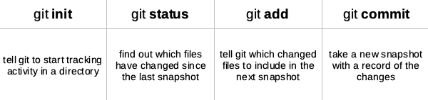

Introduction to Git and GitHub
https://ubc-library-rc.github.io/intro-git/
Land Acknowledgement
UBC Vancouver is located on the traditional, ancestral, and unceded territory of the xʷməθkʷəy̓əm (Musqueam), səl̓ilwətaɁɬ təməxʷ (Tsleil-Waututh), Stz’uminus, S’ólh Téméxw (Stó:lō), Skwxwú7mesh-ulh Temíx̱w (Squamish), and Coast Salish peoples.
But before going into more details I would like to begin by acknowledging that I am fortunate to present this workshop in Burnaby which is the unceded territory of the Coast Salish People.
Please take a moment to explore this website and use the chat to share where you are coming from.
Use the Zoom toolbar to engage
Participants window
I have never used the command line
I use the command line often
Pre-workshop setup
https://ubc-library-rc.github.io/intro-git/
Please make sure to have a Bash Shell and Git installed before the workshop.
If you do not have access to a laptop or have difficulty meeting these prerequisites please contact shayanfa@mail.ubc.ca. We will do our best to ensure everyone can participate.
1. Create a free GitHub account
2. Install the Bash Shell and Git
Mac and Linux. Bash is already installed.
Install Git using these instructions.
If you use macOS Catalina or newer versions, change the default shell to Bash by running the following command:
Open Bash (Terminal in Mac, Git Bash in Windows) and enter the following commands to configure Git. (Note that $ represents the command prompt; the commands themselves start with the word git.)
What is version control?
A way to track changes made to files
Version control software tracks the changes made to a group of files. Version control systems like Git are often associated with software development but are increasingly used for collaboration in research and academic environments..
Version control should be used to prevent such circumstances, that are familiar to all of us.
Benefits of version control
collaboration
versioning
rolling back
understanding context
backup
It takes some discipline to learn and make use of version control but there are many benefits:
Collaboration - Version control helps teams work collaboratively on same set of documents without interfering with each other.
Versioning - It provides a thorough log of changes to tracked files without creating multiple copies, making it easier to identify the most current version.
Rolling back - Made a mistake? Version control lets you review and undo changes, reverting to previous stages in the document’s history. This can be useful when changes to your files introduce unforeseen problems.
Understanding context - Version control can help you understand how the code or writing came to be, who wrote or contributed particular parts, and who you might ask to help understand it better.
Backup - While not meant to be a backup solution, version control systems mean your code and writing can be stored on multiple computers.
Git: open source tool installed on your local computer to track changes made to a set of files (referred to as a git repository )
GitHub: a popular website for hosting and sharing Git repositories
Git and GitHub are often used interchangeably but it’s important to understand what each does and how they work together.
Git is a free, open source tool that can be installed on your local computer to track changes made to a set of files (referred to as a “git repository” or “repo”). Git can be used independently to organize one’s own work, or to coordinate team projects with multiple authors. Git ensures that everyone’s contributions are tracked and merged effectively by keeping copies of all previous versions and documenting the changes, when they were made, and by whom.
Git was designed for text files that can be opened in a text editor (as opposed to binary file formats like .pdf and .docx). A Git repository can preserve files of any type, but only text files will benefit from all Git’s features.
GitHub is a popular website for hosting and sharing Git repositories. GitHub provides online infrastructure that makes it easier for teams to collaborate with Git. Team members make contributions to the repository on local copies of the files, then “push” their changes back to GitHub so everyone else can see them.
The GitHub interface makes it easy to view files in the repository and what changes have been made. GitHub also makes it easier for groups to publish their work (each GitHub repository can have its own project website, blog, and wiki using GitHub Pages.)
Git basics
One of the challenges of learning Git is becoming familiar with its terminology and command structure.
This workshop is divided into several parts and each of them describes one workflow with Git.
Git Workflows
Making and maintaining a repository on your machine
Creating a repository on Github
Syncing local repository with Github
Forking projects and working collaboratively
Creating a repository
You can think of a repository as a group of files that Git tracks. When you create a repository Git generates a hidden directory named .git in the same folder. Information about the repository, changes to the files, and previous versions are all stored in this hidden directory so they are accessible but don’t get in the way.
You can create repositories using GitHubs web interface, or on your own computer using the command line. Let’s use the command line to create a Git repository for new project. (On a Mac, open Terminal, on a PC open Git Bash.)
First, create a directory called hello-world and navigate to the new directory.
We will now create a Git repository to track changes to our project. Use the git init command, which is simply short for initialise.
If you run the “ls” command to list the contents of the “hello-world” directory your repository may seem empty. But running “ls -a” instead will include hidden files in the list, revealing the new hidden directory named “.git”.
Displaying project status
The git status command displays the current state of a project.
The output introduces two new Git concepts:
branch main. A Git repository can be split into multiple “branches” that can be worked on independently before merging later. New repositories start with only one branch, named “main” by default. In this workshop everything we do will be in branch main.
commit. The git commit command saves your changes to the repository. The output above tells us there is nothing new to save in our repository.
Git workflow
We will now create and save our first project file. This is a two-stage process. First, we add any files for which we want to save the changes to a staging area, then we commit those changes to the repository. This two-stage process gives us fine-grained control over what should and should not be included in a particular commit.
Lets create a new file using the touch command, which is a quick way to create an empty file.
Lets check the status of our project: Git has noticed a new file in our directory that we are not yet tracking. With colourised output, the filename will appear in red. To change this, and to tell Git we want to track any changes we make to index.md, we use git add.
Git commands

This adds the file to the staging area, telling Git that “index.md” is a file it should track. To see what effect this had we can use git status again.
Before committing the new file, open “index.md” in a text editor, add a line of text, then save the file. (In this example we enter the text Hello, world!). Use git status to see what has chnaged from Git’s perpective.
This lets us know that Git has indeed spotted the changes to our file, but that it hasn’t yet staged them, so let’s add the new version of “index.md” to the staging area.
Now we are ready to commit our first changes. Commit is similar to “saving” a file, but in addition to saving the contents of a file git commit stores information about the file’s history, including what changes were made, when, and by whom.
Having made a commit, we now have a permanent record of what changed, along with information about who made the commit and at what time.
Github repositories
https://github.com/
So far you used Git to create a repository called “hello-world” on your own computer, but no one else can see those files. Next you will use GitHub to share the contents of your repository so others can collaborate. This involves creating an empty repository in GitHub, then linking it to your local repository.
Make an empty repository, talk about the readme file, clone the repository on your local machine, add the files, push it to Github, change it on Github, pulling on the local machine
After creating the “hello-world” repository GitHub will display the repository page. This includes information required to link your GitHub repository to the “hello-world” repository you created with Git on your own computer.
link the repositories with “git remote add” Enter the command below, replacing as appropriate.
Push and pull
The git push command can “push” our local content and tracking information to the GitHub repository, synchronizing the content.
The nickname of our remote repository is “origin” and the default local branch name is “main”. The -u flag tells git to remember these parameters, so that next time we can simply run git push and Git will know what to do.
When we do a git push we will see Git “pushing” changes to the specified remote repository - in this case, on GitHub. Because our file is small this happens instantly, but it may take longer if you made many changes or are adding a very large repository. The git status command will indicate the status after “pushing” is complete.
When working with others or on multiple computers we need a way to pull all the remote changes back into our local repository. We can see how this works by adding a file to our GitHub repository, then “pulling” that change back to our computer.
Diff and log command
The git diff command shows the changes we have made before a commit. To test this, open “index.md” with any text editor and enter a new line of text (in this example we added “It’s a beautiful rainy day” on the second line of “index.md”). Save the file, then use git diff to see the changes.
Heres what the output reveals:
Line 1 tells us Git is comparing “a” and “b” versions of the index.md file
Line 2 indicates which tracked versions “a” and “b” correspond to; “aed0629” and “989787e” are unique computer-generated identifiers for each version
The last two lines show the changes to the “index.md” between the compared versions:
there were no changes to the # Hello, world! line
a line was added with the text It's a beautiful rainy day (“+” indicates an addition and “-“, a deletion)
Try it out!
Instructons in Git basics section of sitehttps://ubc-library-rc.github.io/intro-git/
Collaborating with Git
Owner and collarborators of project, what is a pull request, registering issues
Git and graphics
Owner and collarborators of project, what is a pull request, registering issues
Git and Visual Studio Code
Git and open source community